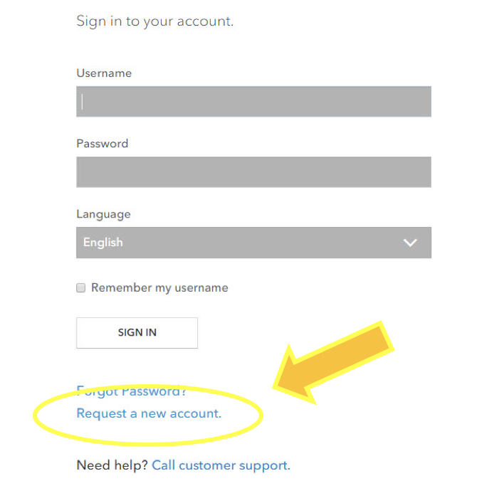
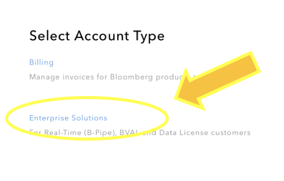
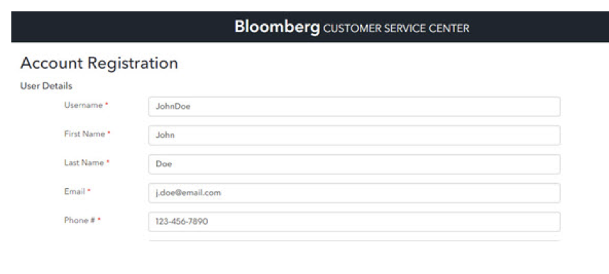

Introduction¶
The EMSX API is available as programmable and with Excel as both COM and Add-In. The EMSX API provides Bloomberg users with the ability to manage and automate Equities, Futures and Options trading using Microsoft Excel/VBA or creating a custom application in C++, C# (.NET), Python and Java. You can also use Matlab using Trading Toolbox and R.
It also allows users to access the full 2000+ global execution venues available through EMSX.
The EMSX API requires separate authorization by the receiving broker on top of the Bloomberg Authorization.
Note
EMSX API users will need the following steps completed before using the EMSX API at the desktop.
- Signed ETORSA, Bloomberg Electronic Trading & Order Routing Services Agreement and applicable country legal paperwork, including FIET are required. An override for UAT testing can be requested in the event clients do not have all legal documentation in place. This cannot be performed for the production environment.
- Enable EMSX API per UUID by the Global EMSX Trade Desk for Test (Beta) and Production. Enable Excel Add-In inside the Bloomberg Ribbon for those using the Excel Add-In.
- To get access to EMSX API in UAT and production, please click <Help><Help> on EMSX<GO>.
- Download Bloomberg Desktop API v3 SDK from WAPI<GO> in Bloomberg terminal.
For Server Side EMSX API access, the following additional steps are required on top of the desktop EMSX API requirements.
- Signed EMSxNET Order Originator Agreement.
- Install serverapi.exe and register with Bloomberg.
To get access to EMSX API in UAT and production, please click <Help><Help> on EMSX<GO>.
Sign Up - Programming Support¶
For general programming support, please open an account through the following URL:-
For a new user, you will need to first start by creating the account in https://service.bloomberg.com and select “Request a new account”.
{kind=link}
Select Enterprise Solutions:-
{kind=link}
Fill out the details on Account Registration:-
{kind=link}
Select B-Pipe, select the role as Technical Contact, and insert Customer #. The Customer # can be found in the terminal by typing IAM<GO>. Select production information as B-Pipe and click register to finish:-

EMSX API access from Microsoft Excel (COM)¶
The EMSX API for Excel is accessible using Microsoft Component Object Model (COM) or as part of Bloomberg ribbon within Bloomberg Excel Add-In.
The Microsoft Component Object Model (COM) is a platform-independent, distributed, object-oriented system for creating binary software component that can interact with Bloomberg EMSX API services from your desktop where Bloomberg terminal is installed.
| ref: | https://msdn.microsoft.com/en-us/library/windows/desktop/ms694363(v=vs.85).aspx |
|---|
EMSX API access from MATLAB¶
The EMSX API for MATLAB is accessible by using MATLAB Trading Toolbox in addition to the standard MATLAB package. The matlab samples for EMSX API can be found in both MATLAB Central file exchange.
Please contact your local MATLAB representative for more details on the MATLAB Trading Toolbox.
EMSX API access from R¶
The EMSX API can also be accessed via R language. The current R repository is designed for general Bloomberg API usage using both the subscription and request/response services. The EMSX API uses both services and thus even though the current sample illustrates //blp/mktdata and //blp/refdata, this can easily be repurposed for //blp/emapisvc which refers to the EMSX API service name.
EasyMSX¶
The EasyMSX is a supplemental code sample for developers who will use the Bloomberg EMSX API to develop custom applications.
The EasyMSX wrapper is a code sample that can be compiled into a library. The EasyMSX are set of files to build a project that demonstrates one possible way to build caching data or a starting place to work with Bloomberg EMSX API.
Please note this is not a compiled binary. This is a CODE SAMPLE. There is no SLA (Service Level Agreement) or quality assessment or guarantees.
The EasyMSX allows getting orders, routes, and static data from EMSX API service. The EasyMSX allows adding notification handler on the real-time events. There is an observer pattern that can throw exceptions as illustrated in the EasyMSXSample.py.
EasyMSX folder consists of the core code samples. The EasyMSXSample.py is the sample to use.